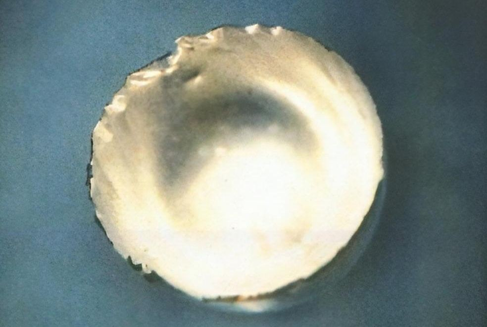

Фермий
Фе́рмий (химический символ — Fm, от лат. Fermium) — радиоактивный трансурановый химический элемент 3-й группы (по устаревшей классификации — побочной подгруппы третьей группы, IIIB) седьмого периода периодической системы химических элементов Д.И. Менделеева с атомным номером 100.Относится к семейству актиноидов.
Впервые изотоп 255Fm обнаружен американскими физиками А. Гиорсо и др. (Берклиевская национальная лаборатория) в 1952 г. в продуктах термоядерного взрыва; назван по имени Э. Ферми.

Изотопы фермия получают облучением мишеней из Th, U или Pu на циклотроне ускоренными ионами Ne, О или С, облучением смеси изотопов Pu, Cm или Cf в ядерном реакторе нейтронами. Используется для синтеза более тяжёлых химических элементов.